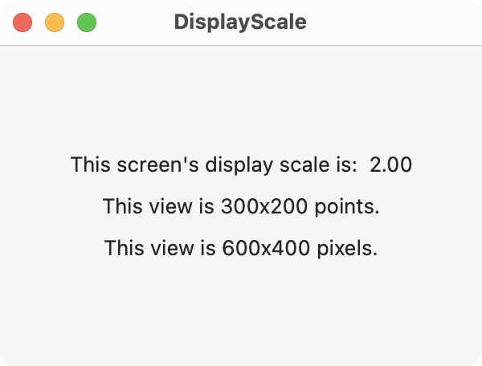

Get the display scale of the environment with the displayScale value. This can be used to convert a view's dimensions in points to pixels as seen in the example below.

import SwiftUI
struct ContentView: View {
@Environment(\.displayScale) var displayScale
var body: some View {
VStack(spacing: 10) {
Text("This screen's display scale is: \(displayScale, specifier: "%.2f")")
Text("This view is 300x200 points.")
Text("This view is \(300*displayScale, specifier: "%.0f")x\(200*displayScale, specifier: "%.0f") pixels.")
}
.padding()
.frame(minWidth: 300, minHeight: 200)
}
}
Swift Programming for macOS © 2025
Built by Gavin Wiggins